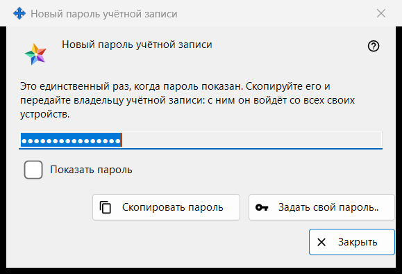
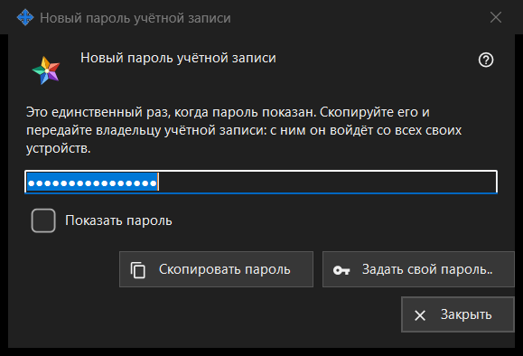

Новый пароль учётной записи
Назначение
Показывает или запрашивает пароль учётной записи сервера обмена в трёх режимах: созданный пароль, который программа только что сделала, показывается один раз (это режим на картинке); введённый - окно просит ваш собственный пароль; сохранённый - показывает пароль, хранящийся на этом ПК. Окно открывается в настройках локального сервера обмена в Share Manager после «Добавить учётную запись..», «Сбросить пароль..» или «Задать общий пароль..», а также из вопросов о пароле администратора.


Порядок действий
- Созданный пароль: нажмите «Скопировать пароль» (отметьте «Показать пароль», чтобы его прочитать), передайте пароль владельцу учётной записи и нажмите «Закрыть».
- Свой пароль: нажмите «Задать свой пароль..» или выберите «Ввести пароль самому», введите пароль, подходящий под правило, и нажмите «Сохранить пароль».
- Сохранённый пароль: выберите учётную запись и нажмите «Показать пароль..».
Элементы окна
Созданный пароль (на картинке)
Заголовок «Новый пароль учётной записи». Вводный текст: «Это единственный раз, когда пароль показан. Скопируйте его и передайте владельцу учётной записи: с ним он войдёт со всех своих устройств.» Поле скрыто и доступно только для чтения; «Показать пароль» раскрывает его только в этом окне. «Скопировать пароль» кладёт пароль в буфер обмена защищённым способом: в историю буфера Windows и в облачный буфер он не попадает; окно отвечает «Пароль скопирован.». При закрытии окна поле очищается.
Закрытие без копирования
Если закрыть созданный пароль, который вы не скопировали и не показывали, программа спросит «Закрыть, не скопировав пароль?» и добавит, что показать его снова нельзя - потом его можно будет только сбросить. По умолчанию выбрано «Нет». Если пароль хранится на этом ПК, вопрос не задаётся.
Задать свой пароль..
Работает в окне учётной записи, в окне общего пароля приглашения и в окне пароля администратора: закрывает это окно, не используя созданный пароль, и снова запрашивает пароль, теперь тот, который вы вводите сами, - он заменяет созданный.
Введённый пароль
Заголовок «Пароль учётной записи», подпись «Пароль:», скрытое поле и «Показать пароль». Подсказка: «Не короче 10 символов, с заглавной и строчной латинской буквой и цифрой.» Когда вы вводите пароль, строка предупреждения говорит, чего не хватает, например «Нужна хотя бы одна цифра.». «Сохранить пароль» не принимает пароль, не подходящий под правило; подходящий возвращается окну, которое его запросило, а последнее слово остаётся за сервером.
Сохранённый пароль
В заголовке после слов «Пароль учётной записи» стоит логин. Окно показывает пароль, хранящийся на этом ПК, только для чтения, с «Показать пароль» и «Скопировать пароль»; при закрытии ничего не спрашивается. Его открывает «Показать пароль..» в списке учётных записей, которая появляется, только когда включён переключатель «Хранить пароли учётных записей на этом ПК». По умолчанию он выключен; при включении программа сначала спрашивает, а пароль затем хранится зашифрованным для вашей учётной записи Windows, и любая программа под ней может его прочитать. Пароль, заданный до включения переключателя, не хранится.
Настройки менеджера · Настройки общего доступа SFTP · Настройки сервера обмена